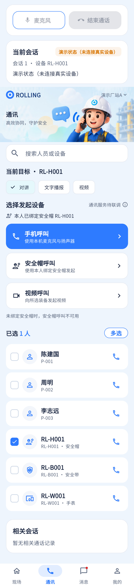

设备/事件维度记录已接；全量历史、类型筛选、时长与联系人展示仍不齐。
相同 · 已有基础
通信记录区和语音/视频图标已有，会话结果与事件处置记录分开。
不同 · UI与场景
当前是通讯底部“相关会话”，参考为专门内容画板及三项页签；截图空记录不能证明查询没实现。
01 / 先看 UI
两图显示宽度统一；设计390px与当前360逻辑宽的画布不同。各图可独立滚动到底，点击“原图”放大。


使用既有组件截图；业务数据为示例。
02 / 逐项核对功能与小交互
入口：通讯 → 选择装备 → 下滑查看记录 · 当前形态：功能区
| 编号 | 部位 | 设计要求 | 当前UI | 功能结论 | 下一步 |
|---|---|---|---|---|---|
| 21-01 | 入口 | 查看通话记录 | 当前无独立快捷按钮，需下滑 | 部分：区块已存在 | 新增明确入口或滚动锚点，不一定新增路由 |
| 21-02 | 范围 | 相关人员与设备历史 | 当前按eventId或deviceId；无目标直接空列表 | 部分：不是全厂/个人全部历史 | 明确范围，补授权历史查询接口后再做“全部记录” |
| 21-03 | 类型页签 | 全部/语音/视频 | 当前无 | 缺失 | 补筛选及空结果 |
| 21-04 | 对象 | 周明/李志远或设备号 | 当前“SOS/单呼+SN或deviceId” | 部分：人名未丰富 | 保留会话类型同时增加联系人 |
| 21-05 | 时间 | 今天/昨天及发生时刻 | 当前formatTime完整时间 | 已有代码：startedAt | 对齐易读格式，保留详情精确时间 |
| 21-06 | 时长 | 每次持续时间 | 当前列表无时长 | 缺失 | 依据连接和结束时间计算，未接通不可给通话时长 |
| 21-07 | 结果 | 已结束/未接通等徽标 | 当前statusLabel放副标题 | 已有代码：状态枚举 | 统一中文、颜色，错误不能当未接通 |
| 21-08 | 恢复会话 | 参考未画 | 当前合法offered会话可恢复 | 已有代码：canResume和resumeCall | 保留权限和终态限制 |
| 21-09 | 长列表 | 历史完整可浏览 | 当前接口返回列表，无此区分页UI | 部分：数据多时需容量约定 | 验全量/分页策略，区分加载失败与无历史 |
源码依据
communications/communications_page.dart:995；communications/api_gateway.dart:144
链接为随报告保存的带行号快照；行号对应分析时源码。以函数和字段共同定位，不能将请求代码视为执行成功证据。